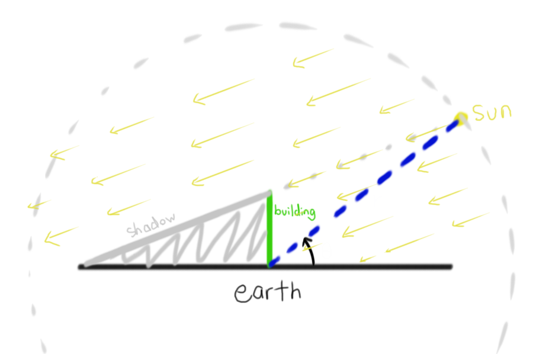

A project by Alan Ma The initial problem: Model the shadow length of a building on a flat Earth, assuming that rays from the Sun are all parallel (and not radial).
Solution: First Edition
I started out with a graphical interpretation of the scenario:
the flat-earth, point-sun model

I wanted to create a model that was flexible enough to allow parameters – a variable building position and height, as well as a variable radius of the sun.
With these parameters, I defined a few variables and gave a more concrete model.
We know that the coordinates of S are dependant on θ and are equal to (rcosθ,rsinθ).
The model would then be:
the model with variables
The value that we are looking for is Esx. I found this with a 2-step process:
Find the equation of the the line passing through points E and B.
Substitute y=0 into the equation to find the x-intercept – this will be Esx.
Use the values of Esx and h to find the shadow length L.
Step 1
Equation of a line using points: y2−y1y−y1=x2−x1x−x1 x=y2−y1(y−y1)(x2−x1)+x1
Use this equation for BS: x=rsinθ−k(y−k)(rcosθ−h)+h Step 2
Substituting in y=0 yeilds the following: x=rsinθ−k−k(rcosθ−h)+h x=rsinθ−k−krcosθ+hk+hrsinθ−hk x=rsinθ−k−krcosθ+hrsinθ
Thus, Esx=rsinθ−k−krcosθ+hrsinθ Step 3
The shadow length is equal to the position of the building minus the position of the shadow of the ground. Since lengths are always positive, the absolute value of the result is taken. L=∣h−Esx∣ L=∣k−rsinθkrcosθ−hrsinθ+h∣